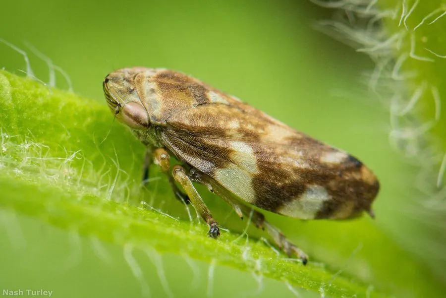

昆虫 · 动物界
沫蝉 Philaenus spumarius

俗称“吹泡虫”的小型昆虫，若虫会分泌泡沫把身体包起来，藏在泡沫中吸食植物汁液，成虫善于跳跃。
- 分类
- 门节肢动物门纲昆虫纲目半翅目科沫蝉科属沫蝉属
- 栖息环境
- 草地、灌丛和农田，若虫在植物茎叶上分泌泡沫团
- 地理分布
- 全球广泛分布，中国各地均有
- 保护级别
- 暂无评估
物种志
沫蝉成虫体长 5–7 mm，体色多变，从黄褐、灰褐到黑色甚至带条纹的都有，是典型的多态性物种。后足发达，善于跳跃，受惊时能一下跳出很远。
沫蝉全球分布，栖息于草地、灌丛和农田。若虫会分泌泡沫把身体包起来，泡沫由植物汁液和腺体分泌物形成，用来保湿、防晒和躲避天敌，这就是“吹泡虫”名字的由来。若虫和成虫都吸食植物汁液。成虫在植物间跳跃活动，繁殖期把卵产在植物组织内。在草地上散步时，常能从植物茎叶上发现这团泡沫。沫蝉在农田中数量多时会吸食作物汁液，但通常不造成严重危害。目前它没有IUCN 的正式评估，中国未将其列入国家重点保护野生动物名录。
形态与习性
- 食性若虫和成虫吸食植物汁液
- 体长5–7 mm
- 泡沫巢若虫分泌泡沫包裹身体，保湿防晒并躲避天敌
- 跳跃成虫后足发达，跳跃距离可达体长的数十倍
- 体色多变，有黄褐、灰褐、黑色等多种类型
- 分布全球广泛分布
趣味知识
- 沫蝉若虫被泡沫包裹，像藏在一团肥皂泡里。
- 泡沫是由植物汁液和腺体分泌物形成的，可保湿防晒。
- 沫蝉成虫的跳跃距离可达体长的数十倍。